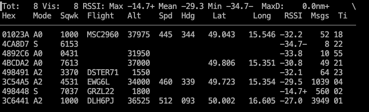
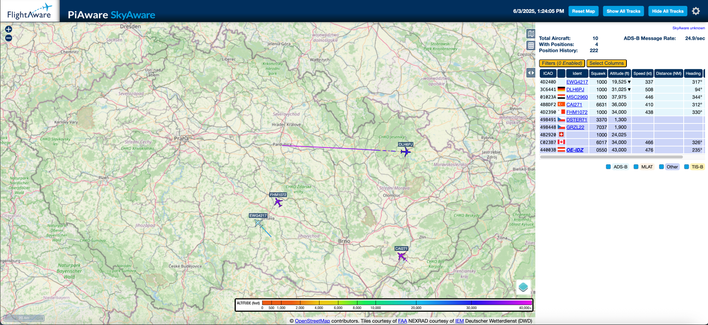
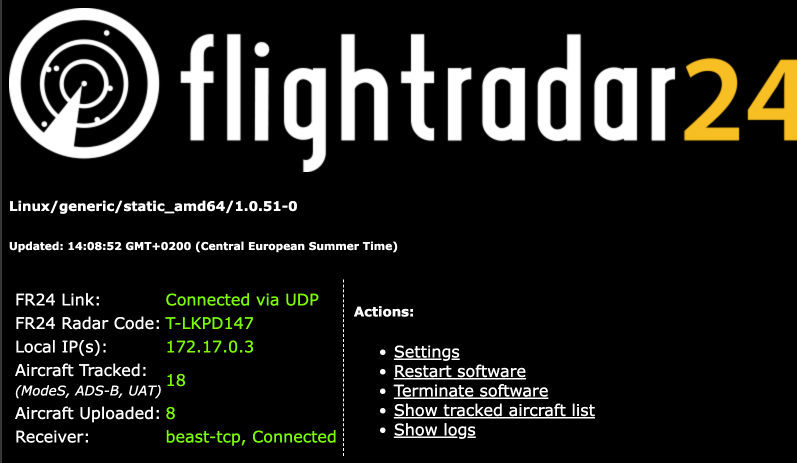

<!DOCTYPE html>
<html lang="en">
<head>
  <meta charset="UTF-8">
  <meta name="viewport" content="width=device-width, initial-scale=1.0">
  <title>RTL-SDR MacOS FR24Feeder Tutorial - Ladislav Vašina</title>
  <link rel="icon" href="data:image/svg+xml,<svg xmlns=%22http://www.w3.org/2000/svg%22 viewBox=%220 0 100 100%22><text y=%22.9em%22 font-size=%2290%22>✈️</text></svg>">
  <script src="https://cdn.jsdelivr.net/npm/react@18.2.0/umd/react.production.min.js"></script>
  <script src="https://cdn.jsdelivr.net/npm/react-dom@18.2.0/umd/react-dom.production.min.js"></script>
  <script src="https://cdn.jsdelivr.net/npm/@babel/standalone@7.20.6/babel.min.js"></script>
  <script src="https://cdn.tailwindcss.com"></script>
  <script src="https://cdnjs.cloudflare.com/ajax/libs/prism/1.29.0/prism.min.js" integrity="sha512-7Z9J3l1+EYfeaPKcGXu3MS/7T+w19WtKQY/n+xzmw4hZhJ9tyYmcUS+4QqAlzhicE5LAfMQSF3iFTK9bQdTxXg==" crossorigin="anonymous" referrerPolicy="no-referrer"></script>
  <link rel="stylesheet" href="https://cdnjs.cloudflare.com/ajax/libs/prism/1.29.0/themes/prism-tomorrow.min.css" integrity="sha512-vswe+cgvic/XBoF1OcM/TeJ2FW0OofqAVdCZiEYkd6dwGXthvkSFWOoGGJgS2CW70VK5dQM5Oh+7ne47s74VTg==" crossorigin="anonymous" referrerPolicy="no-referrer"/>
  <style>
    /* Glowing Button Styles */
    .button-85 {
      padding: 0.6em 2em;
      border: none;
      outline: none;
      color: rgb(255, 255, 255);
      background: #111;
      cursor: pointer;
      position: relative;
      z-index: 0;
      border-radius: 10px;
      user-select: none;
      -webkit-user-select: none;
      touch-action: manipulation;
    }

    .button-85:before {
      content: "";
      background: linear-gradient(
        45deg,
        #48ff00,
        #00ffd5,
        #002bff,
        #48ff00
      );
      position: absolute;
      top: -2px;
      left: -2px;
      background-size: 400%;
      z-index: -1;
      filter: blur(5px);
      -webkit-filter: blur(5px);
      width: calc(100% + 4px);
      height: calc(100% + 4px);
      animation: glowing-button-85 20s linear infinite;
      transition: opacity 0.3s ease-in-out;
      border-radius: 10px;
    }

    @keyframes glowing-button-85 {
      0% {
        background-position: 0 0;
      }
      50% {
        background-position: 400% 0;
      }
      100% {
        background-position: 0 0;
      }
    }

    .button-85:after {
      z-index: -1;
      content: "";
      position: absolute;
      width: 100%;
      height: 100%;
      background: #222;
      left: 0;
      top: 0;
      border-radius: 10px;
    }
  </style>
</head>
<body>
  <div id="root"></div>
  <script type="text/babel">
    const { useState, useEffect } = React;

    const CodeBlock = ({ children, language = "bash" }) => {
      useEffect(() => {
        Prism.highlightAll();
      }, []);

      return (
        <div className="backdrop-blur-xl bg-white/5 rounded-2xl 
                       border border-white/20 shadow-xl overflow-hidden my-4">
          <div className="px-4 py-2 bg-white/5 border-b border-white/20">
            <span className="text-sm text-gray-600 dark:text-gray-300 font-medium">
              {language.toUpperCase()}
            </span>
          </div>
          <pre className="p-4 overflow-x-auto">
            <code className={`language-${language}`}>
              {children}
            </code>
          </pre>
        </div>
      );
    };

    const App = () => {
      useEffect(() => {
        Prism.highlightAll();
      }, []);

      return (
        <div className="bg-gradient-to-br from-gray-900 via-gray-800 to-green-900 text-white min-h-screen">
          {/* Header */}
          <header className="fixed top-0 w-full backdrop-blur-xl bg-black/10 border-b border-white/20 z-50">
            <div className="max-w-5xl mx-auto px-4 py-4 flex justify-between items-center">
              <h1 className="text-xl font-bold">FR24 Feeder on MacOS Tutorial ✈️</h1>
              <div className="flex items-center space-x-4">
                <a
                  href="index.html"
                  className="button-85 text-white font-semibold transition-all duration-300"
                >
                  ← Back to Portfolio
                </a>
              </div>
            </div>
          </header>

          {/* Main Content */}
          <main className="pt-24 pb-16">
            {/* Hero Section */}
            <section className="px-4 py-16">
              <div className="max-w-5xl mx-auto text-center">
                <div className="backdrop-blur-xl bg-white/5 rounded-3xl 
                              p-8 border border-white/20 shadow-2xl">
                  <h1 className="text-4xl md:text-5xl font-bold mb-6">
                    RTL-SDR MacOS FR24Feeder
                  </h1>
                  <h2 className="text-2xl md:text-3xl font-semibold mb-4">
                    and Tracked Planes Map ✈️
                  </h2>
                  <p className="text-lg mb-6">
                    A comprehensive tutorial for setting up FlightRadar24 feeder on macOS using RTL-SDR
                  </p>
                </div>
              </div>
            </section>

            {/* Introduction */}
            <section className="px-4 py-8">
              <div className="max-w-5xl mx-auto">
                <div className="backdrop-blur-xl bg-white/5 rounded-3xl 
                              p-8 border border-white/20 shadow-2xl">
                  <p className="text-lg mb-4">
                    Hi all, I created this tutorial as I was not able to find an up-to-date all-in-one solution for macOS.
                  </p>
                  <p className="text-lg mb-4">
                    This tutorial consists of 2 steps:
                  </p>
                  <ol className="list-decimal list-inside space-y-2 text-lg ml-4">
                    <li>Getting Dump1090 software running on macOS</li>
                    <li>Creating Docker container with fr24feed, which will process data from Dump1090</li>
                  </ol>
                </div>
              </div>
            </section>

            {/* Prerequisites */}
            <section className="px-4 py-8">
              <div className="max-w-5xl mx-auto">
                <div className="backdrop-blur-xl bg-white/5 rounded-3xl 
                              p-8 border border-white/20 shadow-2xl">
                  <h3 className="text-2xl font-bold mb-4">Prerequisites</h3>
                  <ul className="list-disc list-inside space-y-2 text-lg ml-4">
                    <li>Python 3 is installed on your system</li>
                    <li>Docker is installed on your system</li>
                    <li>Own <a href="https://www.rtl-sdr.com/about-rtl-sdr/" 
                             className="text-blue-600 dark:text-blue-400 hover:underline">RTL-SDR dongle</a> and connect it to your Mac (I used a normal USB-C dock for the dongle connection)</li>
                    <li>Be registered as a FlightRadar24 feeder, you need <code className="bg-white/10 px-2 py-1 rounded">SHARING KEY</code>. You can check it here <a href="https://www.flightradar24.com/account/data-sharing" 
                             className="text-blue-600 dark:text-blue-400 hover:underline">https://www.flightradar24.com/account/data-sharing</a></li>
                  </ul>
                </div>
              </div>
            </section>

            {/* Step 1 */}
            <section className="px-4 py-8">
              <div className="max-w-5xl mx-auto">
                <div className="backdrop-blur-xl bg-white/5 rounded-3xl 
                              p-8 border border-white/20 shadow-2xl">
                  <h2 className="text-3xl font-bold mb-6">1. Getting Dump1090</h2>
                  
                  <div className="space-y-6">
                    <div>
                      <h4 className="text-xl font-semibold mb-3">1. Install MacPorts</h4>
                      <p className="mb-4">
                        Install <code className="bg-white/10 px-2 py-1 rounded">MacPorts</code> for your version of macOS from{' '}
                        <a href="https://www.macports.org/install.php" 
                           className="text-blue-600 dark:text-blue-400 hover:underline">
                          https://www.macports.org/install.php
                        </a>
                      </p>
                    </div>

                    <div>
                      <h4 className="text-xl font-semibold mb-3">2. Run MacPorts</h4>
                      <CodeBlock language="bash">
{`sudo port selfupdate
sudo port install help2man
sudo port install gqrx`}
                      </CodeBlock>
                    </div>

                    <div>
                      <h4 className="text-xl font-semibold mb-3">3. Build Dump1090 software</h4>
                      <p className="mb-4">
                        (is used RTL-SDR feed decoding)
                      </p>
                      <CodeBlock language="bash">
{`# in the directory where you want to have dump1090
git clone https://github.com/flightaware/dump1090
cd dump1090
make`}
                      </CodeBlock>
                    </div>

                    <div>
                      <p className="mb-4">
                        In one terminal run (you must be in the directory where the Dump1090 is installed):
                      </p>
                      <CodeBlock language="bash">
{`./dump1090 --interactive --net --write-json public_html/data --aggressive`}
                      </CodeBlock>
                      <p className="mt-4">
                        This step initializes feed collection from your RTL-SDR dongle.
                      </p>
                      <p className="mt-2">
                        It should show something like this:
                      </p>
                      <div className="mt-4 backdrop-blur-xl bg-white/5 dark:bg-white/3 rounded-2xl 
                                    border border-white/20 shadow-xl overflow-hidden">
                        
                      </div>
                    </div>
                  </div>
                </div>
              </div>
            </section>

            {/* Visualization Section */}
            <section className="px-4 py-8">
              <div className="max-w-5xl mx-auto">
                <div className="backdrop-blur-xl bg-white/5 rounded-3xl 
                              p-8 border border-white/20 shadow-2xl">
                  <h3 className="text-2xl font-bold mb-4">Now, visualize and check the data we are getting from RTL-SDR</h3>
                  
                  <p className="mb-4">
                    In the second terminal run (you must be in the directory where the Dump1090 is installed):
                  </p>
                  <CodeBlock language="bash">
{`# TO START THE SERVER RUN FOLLOWING COMMANDS
mkdir data
python3 -m http.server 8090 &

# TO KILL THE SERVER RUN FOLLOWING COMMAND
sudo kill $(sudo lsof -i :8090 | awk 'NR>1 {print $2}')`}
                  </CodeBlock>
                  
                  <p className="mb-4">
                    This will run the server on which we can access the map with our planes.
                  </p>
                  <p className="mb-4">
                    The address for the map is{' '}
                    <a href="http://127.0.0.1:8090/public_html/" 
                       className="text-blue-600 dark:text-blue-400 hover:underline">
                      http://127.0.0.1:8090/public_html/
                    </a>
                  </p>
                  <p className="mb-4">
                    It should look like this:
                  </p>
                  <div className="backdrop-blur-xl bg-white/5 dark:bg-white/3 rounded-2xl 
                                border border-white/20 shadow-xl overflow-hidden">
                    
                  </div>
                </div>
              </div>
            </section>

            {/* Network Configuration */}
            <section className="px-4 py-8">
              <div className="max-w-5xl mx-auto">
                <div className="backdrop-blur-xl bg-white/5 rounded-3xl 
                              p-8 border border-white/20 shadow-2xl">
                  <p className="mb-4">
                    Now that we have data visualized on the map, we will check that the data are exposed via TCP on various ports.
                  </p>
                  <p className="mb-4">
                    It is exposed on our macOS machine's <code className="bg-white/10 px-2 py-1 rounded">localhost</code>, but we don't want to use <code className="bg-white/10 px-2 py-1 rounded">localhost</code> as it can be confusing for the Docker container we will use in the future.
                  </p>
                  <p className="mb-4">
                    Because of that, we need to find your macOS Host's IP Address
                  </p>
                  <CodeBlock language="bash">
{`# Get your macOS host's ip address
ipconfig getifaddr en0`}
                  </CodeBlock>
                  <p className="mb-4">
                    Remember the output of this command (e.g. <code className="bg-white/10 px-2 py-1 rounded">192.168.0.193</code>)
                  </p>
                  <p className="mb-4">
                    Now we will verify that we are getting the data from the RTL-SDR on the desired ports.
                  </p>
                  <CodeBlock language="bash">
{`# Replace 192.168.0.193 with your own IP address
nc 192.168.0.193 30005`}
                  </CodeBlock>
                  <p className="mb-4">
                    You should see some binary output (won't make sense to you, but will to FR24Feeder):
                  </p>
                  <CodeBlock language="bash">
{`3
 ���
��h0�m3,2
         �ɜ�ᗰ�k3
                ��@Z���H0�}�63
                              �̲l���H0�}�63
                                          ��$����6
                                                  : 
                                                    ފ�o3`}
                  </CodeBlock>
                </div>
              </div>
            </section>

            {/* Step 2 */}
            <section className="px-4 py-8">
              <div className="max-w-5xl mx-auto">
                <div className="backdrop-blur-xl bg-white/5 rounded-3xl 
                              p-8 border border-white/20 shadow-2xl">
                  <h2 className="text-3xl font-bold mb-6">2. Creating FR24Feeder Docker container</h2>
                  
                  <div className="space-y-6">
                    <div>
                      <h4 className="text-xl font-semibold mb-3">1. Create a new directory</h4>
                      <p className="mb-4">
                        Create a new directory i.e. <code className="bg-white/10 px-2 py-1 rounded">FR24_docker</code>
                      </p>
                      <CodeBlock language="bash">
{`mkdir FR24_docker
cd FR24_docker`}
                      </CodeBlock>
                    </div>

                    <div>
                      <h4 className="text-xl font-semibold mb-3">2. Create Dockerfile</h4>
                      <p className="mb-4">
                        Now we need to create a Dockerfile
                      </p>
                      <CodeBlock language="bash">
{`touch Dockerfile`}
                      </CodeBlock>
                      <p className="mb-4">
                        Into this file, paste the following content:
                      </p>
                      <div className="bg-yellow-500/20 border border-yellow-500/30 rounded-xl p-4 mb-4">
                        <p className="font-semibold text-yellow-600 dark:text-yellow-400">
                          NOTE: Replace <code className="bg-white/10 px-2 py-1 rounded">YOUR_FR24_KEY</code> and <code className="bg-white/10 px-2 py-1 rounded">YOUR_LOCAL_IP</code> with your variables.
                        </p>
                      </div>
                      <CodeBlock language="dockerfile">
{`# Use a lightweight Debian base image
FROM debian:bullseye-slim

# Install dependencies required for FR24 feeder
RUN apt-get update && apt-get install -y \\
    wget \\
    tar \\
    libusb-1.0-0 \\
    net-tools \\
    procps \\
    && rm -rf /var/lib/apt/lists/*

# Download and install the FR24 feeder
RUN wget -O /tmp/fr24feed.tgz https://repo-feed.flightradar24.com/linux_binaries/fr24feed_1.0.51-0_amd64.tgz \\
    && if [ ! -s /tmp/fr24feed.tgz ]; then echo "Download failed"; exit 1; fi \\
    && mkdir -p /opt/fr24feed \\
    && tar -xzf /tmp/fr24feed.tgz -C /opt/fr24feed --strip-components=1 \\
    && rm /tmp/fr24feed.tgz \\
    && if [ ! -f /opt/fr24feed/fr24feed ]; then echo "FR24 binary not found"; exit 1; fi

# Create a directory for FR24 logs
RUN mkdir -p /var/log/fr24feed

# Expose the FR24 feeder web interface port
EXPOSE 8754

# Environment variables for FR24 configuration
ENV FR24KEY="YOUR_FR24_KEY"
ENV BEASTHOST="YOUR_LOCAL_IP"
ENV BEASTPORT="30005"
ENV MLAT="yes"
ENV MLAT_WITHOUT_GPS="yes"

# Copy a startup script to configure and run FR24 feeder
COPY start-fr24feed.sh /start-fr24feed.sh
RUN chmod +x /start-fr24feed.sh

# Command to run the FR24 feeder
CMD ["/start-fr24feed.sh"]`}
                      </CodeBlock>
                    </div>

                    <div>
                      <h4 className="text-xl font-semibold mb-3">3. Create startup script</h4>
                      <p className="mb-4">
                        Now, create another file <code className="bg-white/10 px-2 py-1 rounded">start-fr24feed.sh</code>
                      </p>
                      <CodeBlock language="bash">
{`touch start-fr24feed.sh`}
                      </CodeBlock>
                      <p className="mb-4">
                        Into this file, paste the following content:
                      </p>
                      <CodeBlock language="bash">
{`#!/bin/bash
# Generate fr24feed.ini configuration file
cat > /etc/fr24feed.ini <<EOF
receiver="beast-tcp"
host="\${BEASTHOST}:\${BEASTPORT}"
fr24key="\${FR24KEY}"
bs="no"
raw="no"
logmode="1"
logpath="/var/log/fr24feed"
mlat="\${MLAT}"
mlat-without-gps="\${MLAT_WITHOUT_GPS}"
EOF

# Start the FR24 feeder
exec /opt/fr24feed/fr24feed`}
                      </CodeBlock>
                    </div>

                    <div>
                      <h4 className="text-xl font-semibold mb-3">4. Build and run</h4>
                      <p className="mb-4">
                        And now, finally, let's build the Docker image and run our FR24Feeder container.
                      </p>
                      <p className="mb-4">
                        Run the following commands:
                      </p>
                      <CodeBlock language="bash">
{`# Build the Docker image
docker build -t fr24feed .
# Run the container 
# (Replace 192.168.0.193 with your IP we got previously using ipconfig getifaddr en0)
docker run -d --name fr24feed -p 8754:8754 -e BEASTHOST=192.168.0.193  -e BEASTPORT=30005 fr24feed`}
                      </CodeBlock>
                    </div>
                  </div>
                </div>
              </div>
            </section>

            {/* Final Result */}
            <section className="px-4 py-8">
              <div className="max-w-5xl mx-auto">
                <div className="backdrop-blur-xl bg-white/5 rounded-3xl 
                              p-8 border border-white/20 shadow-2xl">
                  <h3 className="text-2xl font-bold mb-4">Final Result</h3>
                  <p className="mb-4">
                    At this point, everything should be working, and you should be able to check your FR24Feeder status on
                  </p>
                  <p className="mb-2">
                    <a href="http://192.168.0.193:8754/" 
                       className="text-blue-600 dark:text-blue-400 hover:underline">
                      http://YOUR_IP_ADDR:8754/
                    </a>
                  </p>
                  <p className="mb-4">
                    or
                  </p>
                  <p className="mb-4">
                    <a href="http://localhost:8754/" 
                       className="text-blue-600 dark:text-blue-400 hover:underline">
                      http://localhost:8754/
                    </a>
                  </p>
                  <p className="mb-4">
                    It should look something like this:
                  </p>
                  <div className="backdrop-blur-xl bg-white/5 dark:bg-white/3 rounded-2xl 
                                border border-white/20 shadow-xl overflow-hidden">
                    
                  </div>
                </div>
              </div>
            </section>

            {/* Conclusion */}
            <section className="px-4 py-8">
              <div className="max-w-5xl mx-auto text-center">
                <div className="backdrop-blur-xl bg-white/5 rounded-3xl 
                              p-8 border border-white/20 shadow-2xl">
                  <h3 className="text-2xl font-bold mb-4">Hope this helps! ❤️</h3>
                  <p className="text-lg mb-6">
                    If you found this tutorial helpful, feel free to connect with me on my other projects!
                  </p>
                  <a
                    href="index.html"
                    className="button-85 text-white font-semibold transition-all duration-300"
                  >
                    Back to Portfolio
                  </a>
                </div>
              </div>
            </section>
          </main>

          {/* Footer */}
          <footer className="py-6 text-center backdrop-blur-xl bg-white/5 
                            border-t border-white/20">
            <p>© 2025 Ladislav Vašina. All rights reserved.</p>
          </footer>
        </div>
      );
    };

    ReactDOM.render(<App />, document.getElementById('root'));
  </script>
</body>
</html>